MS-12 is a sampler and step/realtime sequencer for iPhone, played in landscape orientation.
Making a track follows this flow:
Record sounds on the Sampling screen (microphone, or App Audio resampling).
Edit them on the Edit Sample screen (trim, fade, slice, etc.).
Assign the edited sounds to pads and set how they play (Assign).
Record a sequence on the TOP screen with REC.
Fine-tune the recorded notes on the Edit Seq screen.
Optionally add effects to pads (Effect).
Balance the levels in Mix and write the pattern out with Export.
Each function is explained on the following pages.
TOP Screen
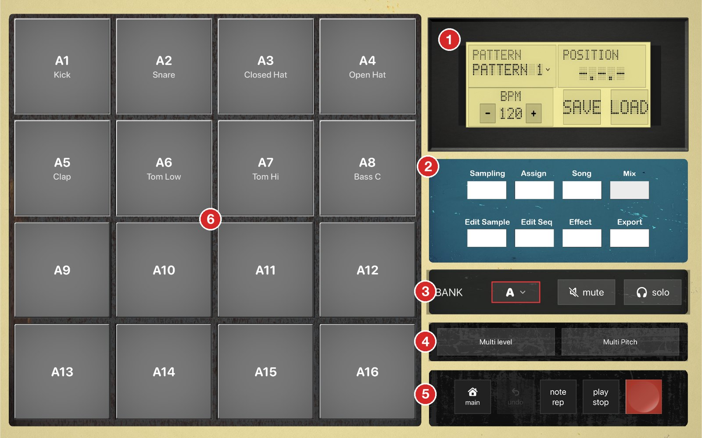
LCD — Shows the current PATTERN (tap to switch patterns), the playback POSITION (bar.beat.16th) and the BPM (− / + buttons, 40–240; long-press the number to type a value). SAVE / LOAD save and recall projects.
Function buttons — Open Sampling, Assign, Song, Mix, Edit Sample, Edit Seq, Effect and Export. The selected function is shown in the left area (or full screen for Mix, Edit Sample and Edit Seq; Assign keeps the pads on the left and shows the settings on the right). While resampling, Sampling blinks red and the other function buttons are disabled.
BANK / mute / solo — Switch the pad bank (A–D), and mute or solo individual pads.
Multi level / Multi Pitch — Spread one pad across all 16 pads at 16 velocity levels or 16 pitches.
Transport — main returns to this TOP screen, undo reverts the last action, note rep turns note repeat on, play / stop starts and stops playback (it also works on the Edit Sample and Edit Seq screens), and the red button is REC (realtime recording).
Pads — Tap a pad to play the sound assigned to it. The tapped pad also becomes the “current pad” used by other screens. Long-press a pad to quickly assign a sound from the temporary list.
Pattern Production Workflow
The basic steps for building one pattern on MS-12. See the following pages for details on each step.
Record sounds with SamplingRecord an external source or the app’s own output and capture it as a sample (Sampling screen).
↓
Edit the sound in Edit SampleEdit the waveform and, if needed, split it into slices (Edit Sample screen).
↓
Assign it to a padAssign the edited sound to a pad and set Tune, ADSR and other playback settings (Assign screen).
↓
Record a sequencePress REC on the TOP screen. After a 4-beat count-in, play the pads in time with the pattern to record your performance.
↓
Edit it in Edit SeqAdjust the position, velocity and pitch of each recorded note (Edit Seq screen).
↓
(Optional) Add effects to padsApply effects such as Tape Echo, Reverb or EQ to each pad as needed (Effect screen).
↓
Balance the mixAdjust the volume and pan of each pad to balance the whole pattern (Mix screen).
↓
Write it out with ExportExport the finished pattern as a WAV file. Your track is complete.
Tip: To arrange several patterns into a full song, chain them on the Song screen. Save your work at any time with SAVE on the LCD.
Pad Controls & Performance
BANK, mute and solo
BANK switches the 16 visible pads between banks A–D (64 pads in total, A1–D16).
Press mute (red frame) and then tap pads to mute or unmute them; press solo (yellow frame) and tap a pad to hear only that pad. While pads are muted or soloed, pressing the button again clears all mutes / solos. Muted pads are silent everywhere, including during sequence playback.
Multi level / Multi Pitch
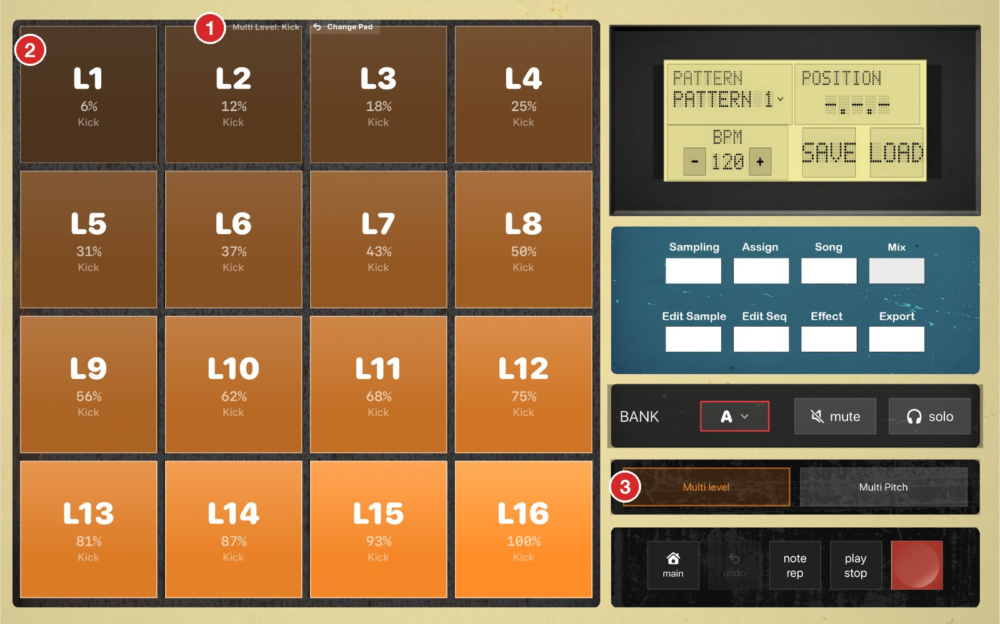
Source pad / Change Pad — Shows the pad currently spread across the grid. Change Pad lets you pick another source pad.
Level pads (L1–L16) — Each pad plays the source sound at a different velocity, from 6% (L1) to 100% (L16). In Multi Pitch mode the pads become P1–P16, from −7 to +8 semitones (P8 = original pitch).
Multi level / Multi Pitch — Turn the mode on, then tap the source pad. The two modes cannot be on at the same time; they are available on the TOP screen only.
Recording a sequence (REC) and note repeat
When stopped, REC plays a 4-beat count-in (the count is shown on the button) and then starts playback and recording. During playback, REC punches in immediately; pressing it again stops recording while playback continues. A metronome clicks while recording. Hits are snapped to the grid set in Edit Seq (default 1/16; none = no quantize). With Multi level / Multi Pitch on, the velocity / pitch you play is recorded too.
note rep: while on, holding a pad retriggers it in time with the BPM. The rate is chosen with the REPEAT menu that appears (1/4, 1/8, 1/16, 1/32; default 1/16).
undo reverts the most recent sequence or pad change (sample assignment, slice-to-pad, Edit Sample “Apply”, Effect settings).
Sampling Screen
Records an external input or the app’s own output and adds it to the temporary sound list. Open it with the Sampling button on the TOP screen.
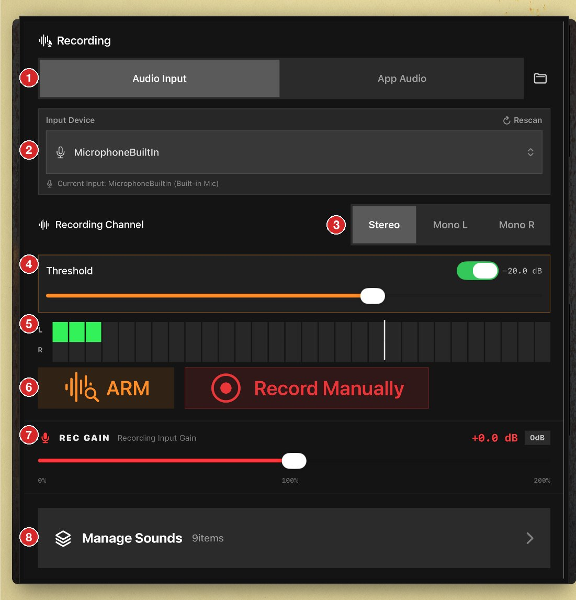
Audio Input / App Audio — Choose whether to record an input such as the microphone, or the sound the app itself is playing (resampling). Choosing App Audio starts resampling immediately and returns to the TOP screen (see the next page). The folder icon loads an audio file from the Files app into the temporary list.
Input Device — Select the microphone or external audio interface to use. Rescan re-detects newly connected devices.
Recording Channel — Record in Stereo, or only the left (Mono L) or right (Mono R) channel.
Threshold — When on, recording starts automatically once the input exceeds the threshold level (−60 to 0 dB, default about −20 dB).
Level meter (L / R) — Shows the input level in real time; the white line marks the threshold.
ARM / Record Manually — ARM puts the recorder on standby (“Waiting…”) until the threshold is crossed; press again to stop. Record Manually starts recording immediately. With Threshold off the button reads Start Recording.
REC GAIN — Adjusts the input level from 0% to 200% (shown in dB). 0dB resets it.
Manage Sounds — Opens the list of recorded and imported sounds (next page).
Resampling (App Audio)
Records the sound the app itself plays — pads, patterns and effects — as a new sample, so you can play and record at the same time.
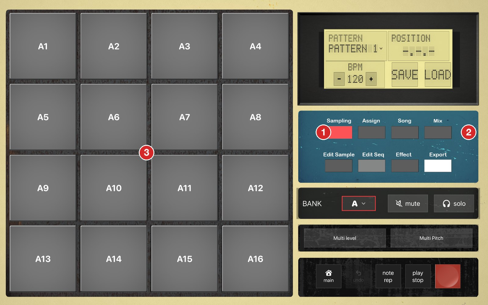
Choose App AudioOn the Sampling screen, tap “App Audio”. Recording starts immediately and the app moves to the TOP screen.
PlayTap the pads and press play / stop as usual. Everything you hear is recorded.
FinishPress the blinking Sampling button once more. Recording stops and the result is saved to the temporary list (Sound 1, Sound 2…).
Sampling (blinking red) — Shows that resampling is in progress. Press it again to finish and save.
Other function buttons — Dimmed and disabled until resampling is finished.
Pads / transport — Still available during recording: play pads, run the pattern with play / stop, use note rep and REC.
In the trial version, resampling stops by itself when the recording limit (10 seconds) is reached, and the recorded part is saved. The full version has no limit.
Manage Sounds Screen
Manages all recorded, imported and sliced sounds in the temporary list. Open it with Manage Sounds on the Sampling screen.
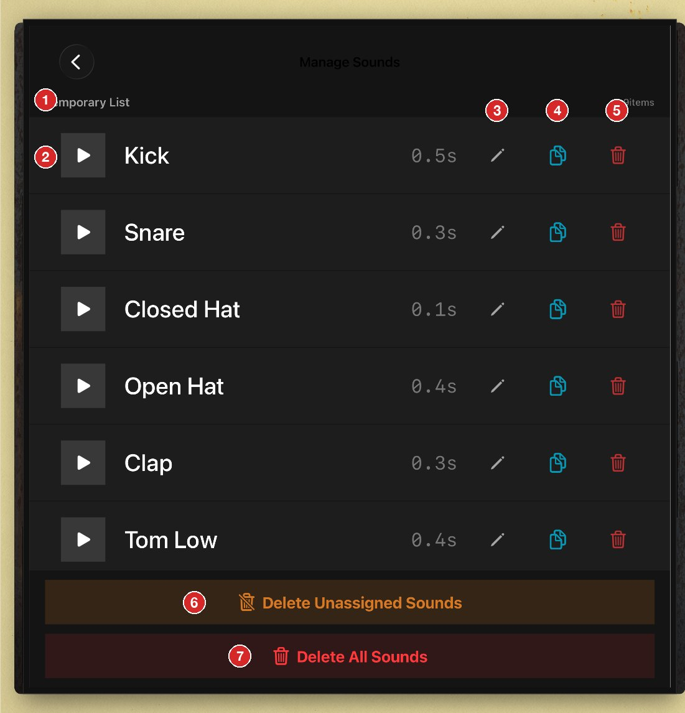
Temporary List — All sounds made so far; the number of items is shown on the right.
Play — Hold to audition the sound. The name and length are shown next to it.
Rename (pencil) — Changes the sound’s name (you can also double-tap the name).
Duplicate — Makes a copy of the sound.
Delete (trash) — Removes the sound from the list. Pads that use it are set to NONE.
Delete Unassigned Sounds — Deletes every sound that is not assigned to any pad.
Delete All Sounds — Deletes all sounds in the list.
New recordings are named Sound 1, Sound 2… Duplicate names automatically get _2, _3… added.
Edit Sample Screen
Edits a sampled sound on its waveform. Open it with the Edit Sample button on the TOP screen; it opens full screen.
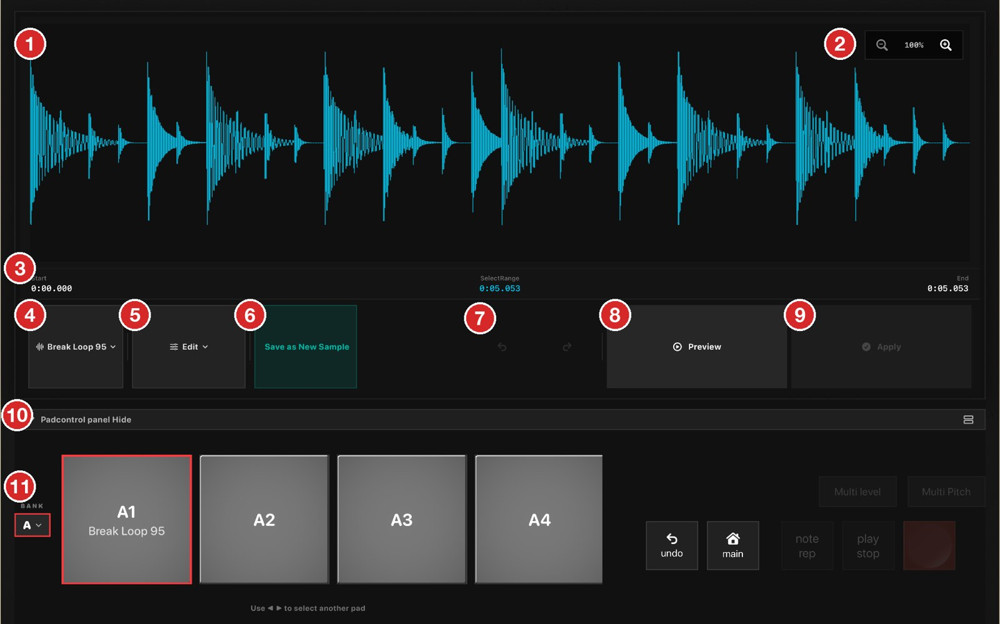
Waveform — The waveform of the sample being edited (stereo samples show L and R).
Zoom — Zoom in and out (100–800%). You can also pinch, and scroll with two fingers.
Start / SelectRange / End — Start point, length and end point of the selected range.
Sample selector — The sample being edited. Tap to switch to another sound from the temporary list.
Edit — Opens the edit menu (Slice, Reverse, etc.). See the next page.
Save as New Sample — Saves the edited range as a new sample in the temporary list. For stereo samples, Stereo Split (L/R) also appears (it saves the left and right channels as two separate mono samples).
Undo / Redo — Steps back and forward through edits on this screen.
Preview — Hold to hear the edited result.
Apply — Commits the edit. Every pad that uses this sample is updated.
Padcontrol panel Show / Hide — Shows or hides the pad panel below. It folds away automatically while most edit panels are open, but stays open while the Slice panel is open.
Pad panel — Select the bank and the pad whose sample you want to edit.
Edit while the pattern plays.play / stop in the transport section works on this screen, so you can start the pattern and keep editing. Press Apply to hear the edited sample in the pattern.
Edit Sample Menu
The menu opened with the Edit button on the Edit Sample screen. Each function opens a parameter panel below the waveform.
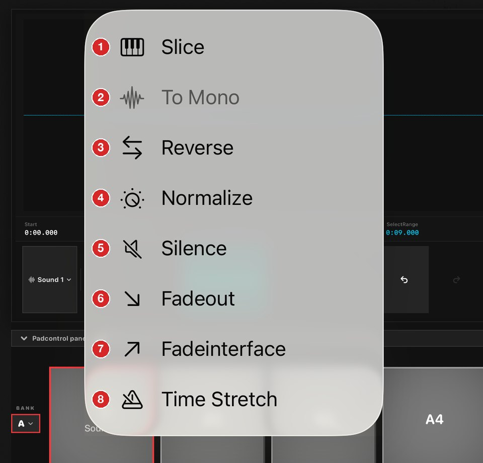
Slice — Splits the waveform across several pads (see the following pages). Mono samples only.
To Mono — New. Converts a stereo sample to mono, keeping only the left or right channel (next page). Greyed out for samples that are already mono, as shown.
Reverse — Plays the waveform backwards.
Normalize — Raises the level automatically so the peak reaches the target (Gain Increase 0–100%).
Silence — Makes the selected range silent.
Fadeout — Gradually lowers the level towards the end of the range.
Fadeinterface — Fade in: gradually raises the level from the start of the range.
Time Stretch — Changes the length (50–150%) while keeping the pitch.
Trim — Keeps only the selected range and removes the rest (drag the handles or enter Start / End). Scroll the menu to show it.
Edits are processed in the order To Mono → Trim → Time Stretch → Fade In → Fade Out → Silence → Normalize → Reverse. Trim is applied only while the Trim panel is open when you press Preview or Apply.
To Mono — Stereo to Mono
Converts a stereo sample into a mono sample by keeping one channel. Open it with Edit → To Mono on a stereo sample.
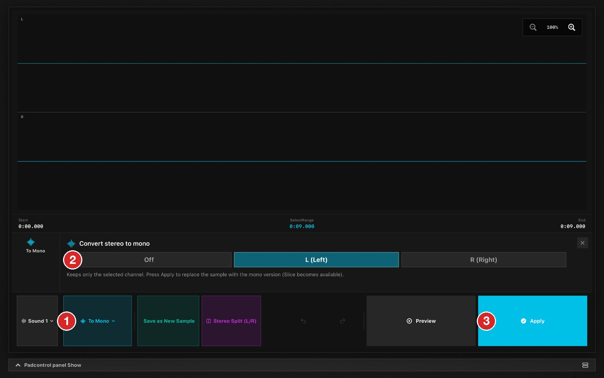
To Mono — The edit menu (now showing To Mono). The panel opens with L (Left) selected.
Off / L (Left) / R (Right) — Choose which channel to keep. Off leaves the sample stereo.
Preview / Apply — Hold Preview to listen. Apply replaces the sample with the mono version.
After applying, the waveform changes from two rows (L / R) to one, and Slice, which needs a mono sample, becomes available. It can be combined with Trim, Fade, Normalize and the other edits. To keep both channels as separate samples instead, use Stereo Split (L/R).
Slice Function ① — Basics
Splits one sample into several sounds and assigns them to separate pads. Open it with Edit → Slice.
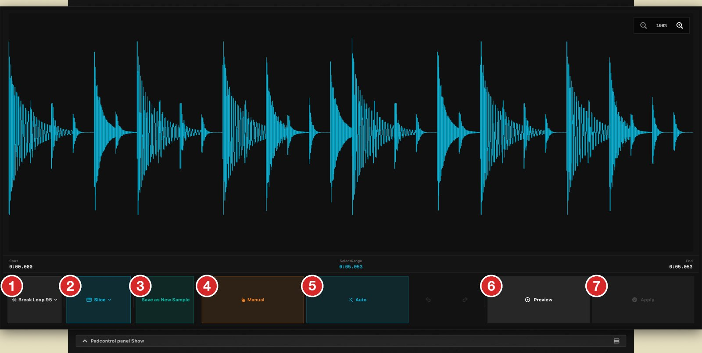
Sample — The source sample to slice.
Slice — The edit menu (now showing Slice).
Save as New Sample — Saves the unsliced sample as a new sample.
Manual — Add slice markers by hand while listening (next page).
Auto — Analyzes the waveform and places slice points automatically (next page).
Preview — Hold to listen.
Apply — Commits the edit.
Manual slicing
Choose Manual. The pad panel stays open while the Slice panel is shown (see the next page). Tap the leftmost pad to play the sample once; while it plays, tap the other pads to drop markers (M1, M2…) at the playback position. The marker list shows each position (m:ss.sss); ⊗ deletes a marker and the trash button clears them all. Back to Selection returns to the Manual / Auto choice.
Slice Function — Pad Panel
The pad panel is always shown while the Slice panel is open, so you can place markers with the pads right away.
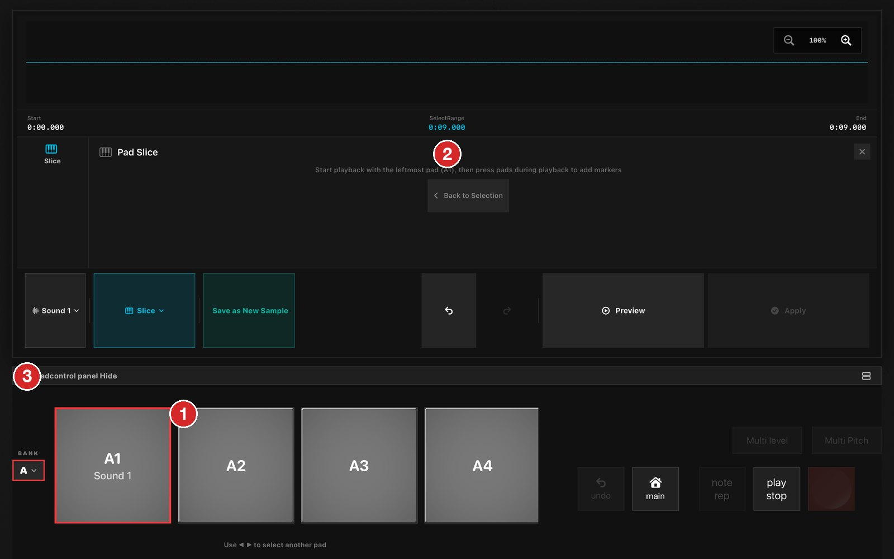
Pad panel — Stays visible during slicing. Tap the leftmost pad (A1) to start playback, then tap the other pads to add markers.
Pad Slice — The instruction for the Manual mode. Back to Selection returns to the Manual / Auto choice.
Padcontrol panel Show / Hide — For other edit panels (Trim, Fade, To Mono, etc.) the pad panel folds away while the panel is open; Slice keeps it open.
Because play / stop also works on this screen, you can run the pattern while you slice a sample.
Slice Function ② — Auto Slice
Choose Auto to analyze changes in level and detect slice points automatically.
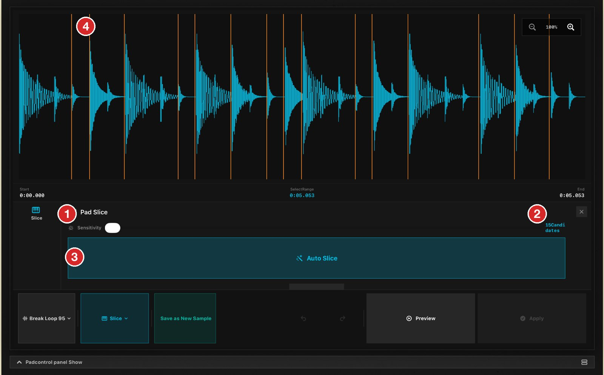
Sensitivity — Detection sensitivity (0–1). Moving it right detects smaller changes and produces more slices.
Candidates — The number of slice candidates found at the current sensitivity.
Auto Slice — Runs the analysis and places the slice markers on the waveform.
Candidate lines — Orange lines preview where slices will be placed.
If no slice can be detected, raise the sensitivity and try again. Detected points are at least 60 ms apart.
Slice Function ③ — Editing Zones
Once markers exist, the sample is divided into colour-coded zones and the pads become zone pads (Z1, Z2…).
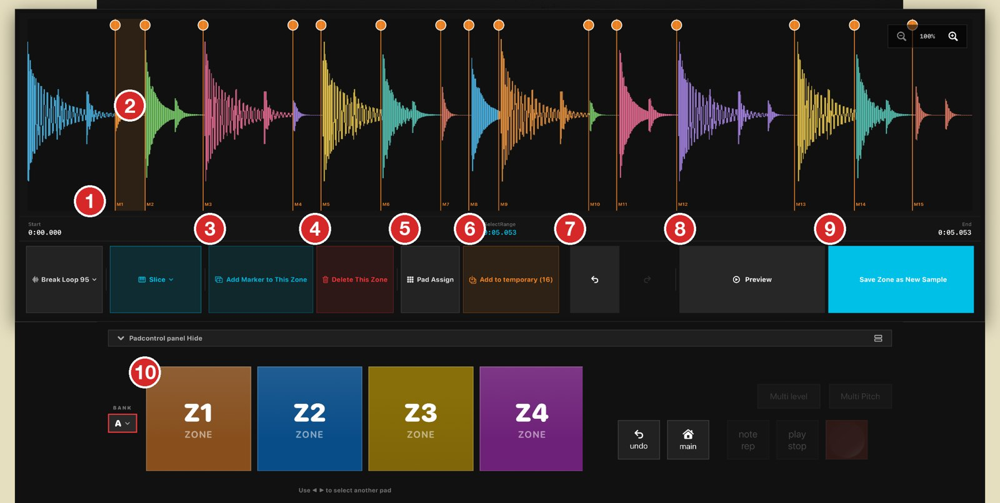
Markers (M1, M2…) — Slice boundaries. Drag a marker left or right to adjust it.
Selected zone — The zone chosen with a zone pad is highlighted.
Add Marker to This Zone — Splits the selected zone in the middle.
Delete This Zone — Merges the selected zone with its neighbour.
Pad Assign — Assigns all slices to pads in one go (next page).
Add to temporary (n) — Adds all slices to the temporary list (the count is shown).
Undo / Redo — Reverts marker edits.
Preview — Hold to listen.
Save Zone as New Sample — Saves only the selected zone as a new sample (<name>_ZoneN).
Zone pads (Z1…) — Tap to hear a zone and select it for editing.
Slice Function ④ — Assigning to Pads
Use Pad Assign to place all slices onto pads at once.
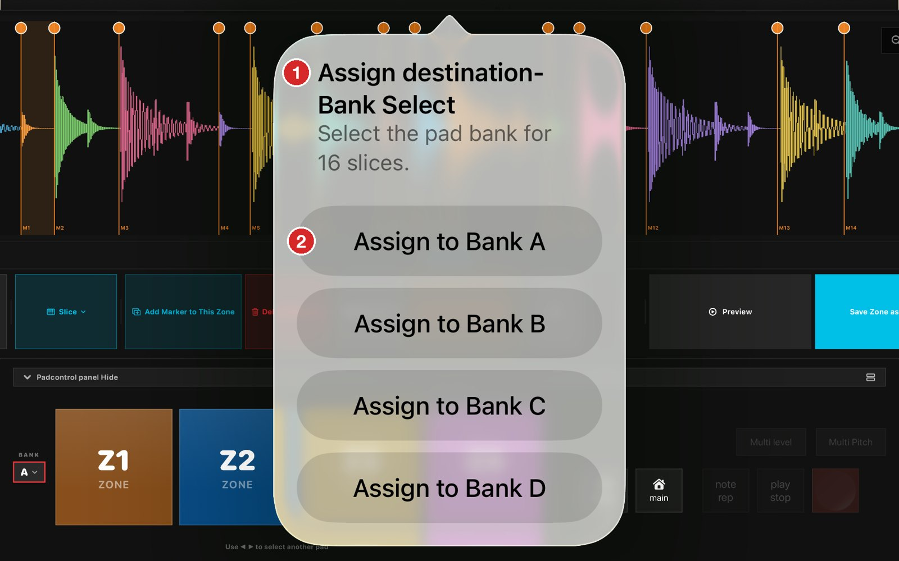
Assign destination – Bank Select — Shows how many slices will be assigned. Slices beyond the 16 pads of one bank continue automatically into the next bank.
Assign to Bank A / B / C / D — Choose the first bank. The slices are placed in order on its pads (A1, A2…), named slice1, slice2… and added to the temporary list.
Assign Screen
Assigns a sound to each pad and sets how it plays. Press the Assign button on the TOP screen: the pads stay on the left and the settings of the selected pad appear on the right. Tap another pad to switch to it.
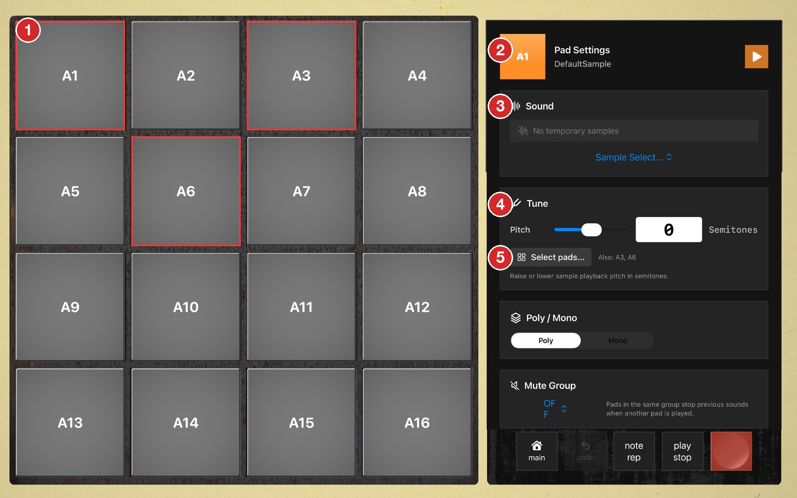
Pads — Tap a pad to select it (red frame) and hear it. The settings on the right always belong to the selected pad.
Pad Settings — The selected pad and its sample name. ▶ previews the pad.
Sound — Choose the sample for this pad from Sample Select… (temporary list), or none. Reset to Default clears it.
Tune (Pitch) — Raises or lowers the playback pitch in semitones (−24 to +24). Drag the slider or type a value in the large number box. The length changes with the pitch.
Select pads… — Applies the tune to several pads at once (next page).
Scroll the settings to reach the rest of the items (next page). The transport buttons (main, undo, note rep, play / stop, REC) stay at the bottom right.
Assign Screen — More Settings
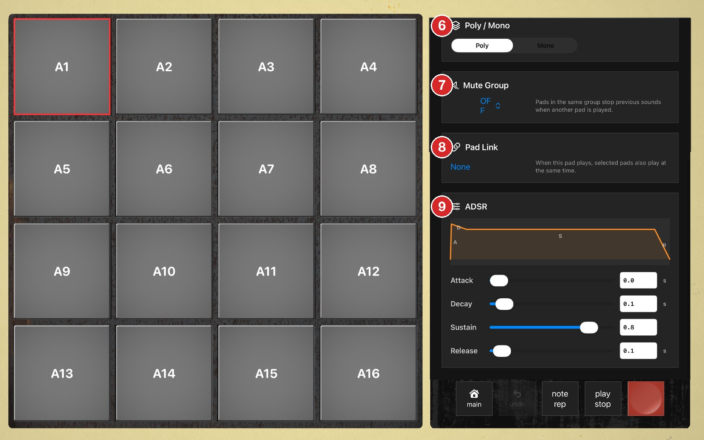
Poly / Mono — Poly lets notes overlap; Mono always plays only one note (a new hit cuts the previous one).
Mute Group — Pads in the same group (1–8) stop each other when played — for example open/closed hi-hats.
Pad Link — Choose other pads that play at the same time whenever this pad plays.
ADSR (Attack / Decay / Sustain / Release) — Sets the volume envelope from the start of the sound until it fades. Attack is how fast it rises (0–1.5 s), Decay the initial drop (0–1.5 s), Sustain the held level (0–1), and Release the tail after the sound stops (0–2.5 s).
Tuning Several Pads at Once
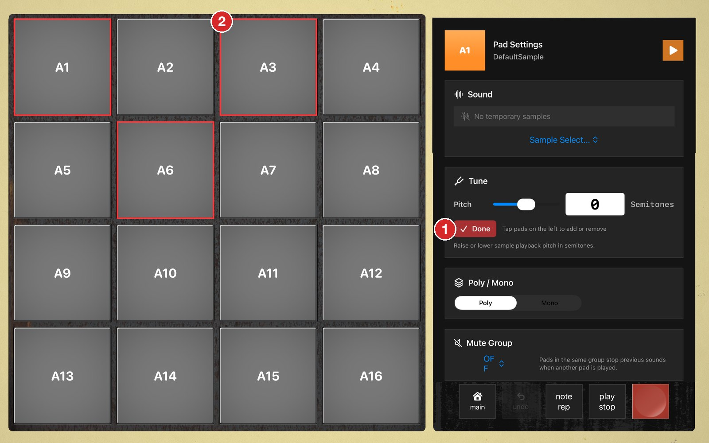
Select pads… / Done — Press Select pads… to enter selection mode (the button turns red and reads Done). Press Done to leave it.
Target pads — In selection mode, tap pads on the left to add or remove them (red frames). Tapping does not play the pad. The chosen pads are listed next to the button (“Also: A3, A6”).
While pads are selected, the slider, the number box and Reset tune change the tune of the selected pad and all chosen pads together. A pad takes on the current tune value when it is added. The selection is cleared when you switch to another pad.
Edit Seq Screen
Edits a recorded pattern step by step. Open it with the Edit Seq button on the TOP screen; it opens full screen. The grid shows the lane of the pad selected in the pad panel.
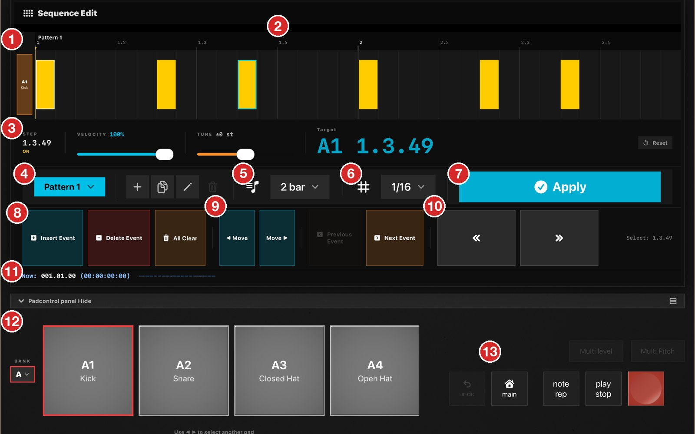
Pad trigger — Tap to write a note at the cursor (when stopped) or at the playback position (when playing).
Timeline — Notes (events) for the selected pad. Brightness shows velocity; tap to select a note or move the cursor.
STEP / VELOCITY / TUNE / Target — Position (bar.beat.tick), velocity (0–100%) and pitch (±24 st) of the selected note, adjustable on the spot. Reset restores 100% / ±0.
Pattern — Choose the pattern to edit; + adds, then duplicate, rename and delete.
Bars — Pattern length, 1–4 bars (default 2).
Grid — Grid resolution: 1/4, 1/8, 1/16, 1/32, 1/64 or none. Also used to quantize realtime recording.
Apply — Quantizes the selected note to the grid.
Insert Event / Delete Event / All Clear — Add a note at the cursor, delete the selected note, or clear every note of this pad in the pattern.
◀ Move / Move ▶ / Previous Event / Next Event — Move the selected note one grid step, or jump to the previous / next note.
« / » — Move the cursor one grid step.
Now — Current playback position and progress.
Pad panel — Switch the pad (track) you are editing.
Transport — undo, main, note rep, play / stop and REC work here as on the TOP screen.
Long-press the Edit Seq button to open Delete PAD Events, which clears all notes of the selected pads in the current pattern (samples stay assigned; undo restores them).
Song Mode Screen
Chains several patterns to set the playback order of a whole song. Open it with the Song button on the TOP screen.
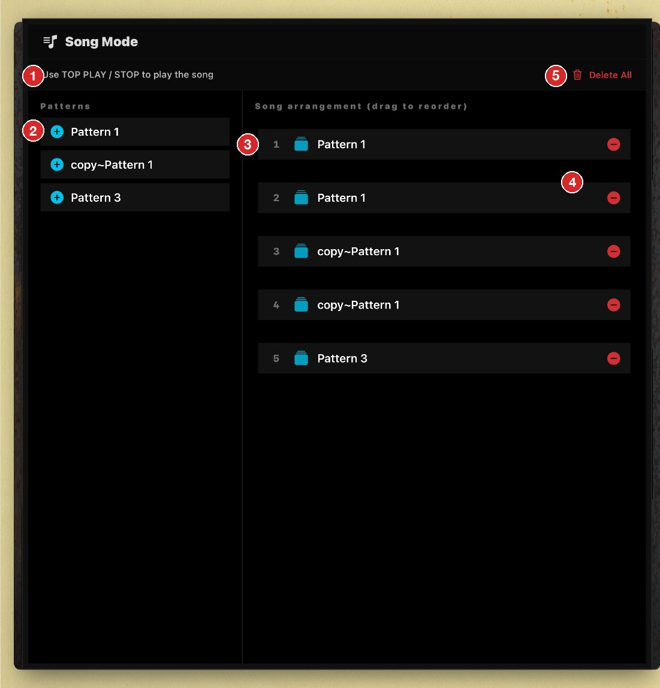
Playback — Play and stop the song with play / stop on the TOP screen. During playback, “Playback: n / N” shows the current position.
Patterns — The list of patterns. Tap ⊕ to append a pattern to the song.
Song arrangement — The playback order. Drag items to reorder them; the playing item turns green.
Remove (⊖) — Removes an item from the song (you can also swipe).
Delete All — Removes every item from the song.
Each item plays once, then the next one; playback stops after the last item. While Song is selected, play on the TOP screen plays the song. Opening Edit Seq or choosing a pattern on the LCD returns to pattern playback.
Effect Screen
Applies effects to the sound of each pad. Open it with the Effect button on the TOP screen.
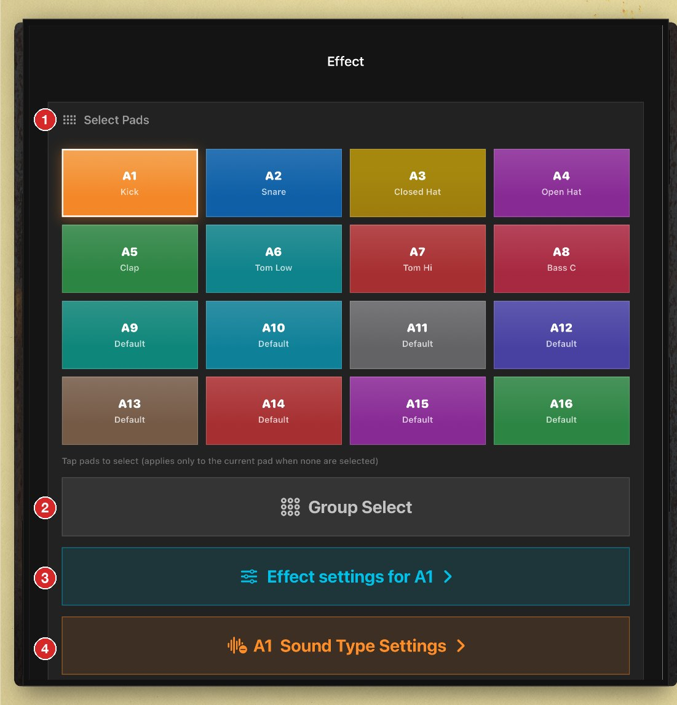
Select Pads — Tap a pad to choose (and hear) the pad to process.
Group Select — Select several pads at once. Select All / Clear help with selection, and Apply copies the current pad’s effect settings to all selected pads.
Effect settings for … — Sets the effect types and parameters for the selected pad(s) (next page).
Sound Type Settings — Sets the lo-fi character of the pads (Aliasing, Ring Mod, Compressor, Saturation, Punch).
Signal chain per pad: Sound Type (Aliasing → Saturation → Punch → Ring Mod → Compressor) → EFFECT 1 → EFFECT 2 → ADSR → velocity / pitch → volume / pan.
Effect Type Screen
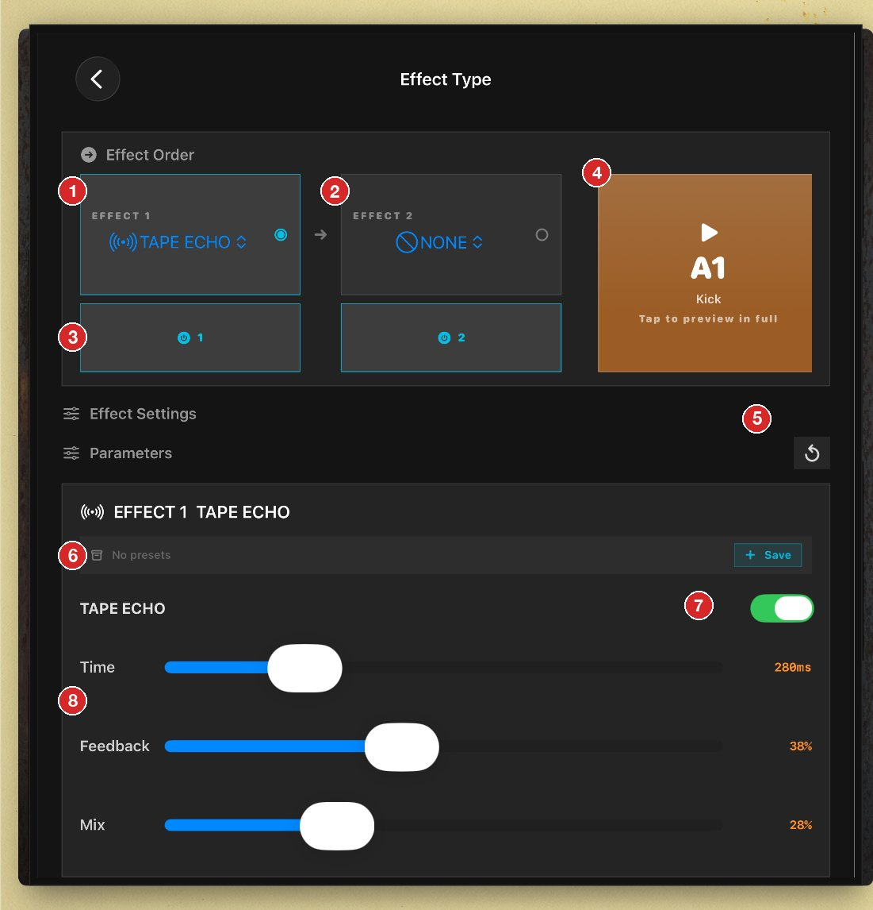
EFFECT 1 — Effect type of the first slot.
EFFECT 2 — Effect type of the second slot (applied after EFFECT 1).
Slot on / off (1, 2) — Bypass or enable each slot.
Preview — Tap to hear the pad with its effects.
Reset (↺) — Returns the effect to its default values.
Presets — Save stores the current settings under a name; tap a preset to recall it, long-press to delete it.
Effect switch — Turns the effect on or off.
Parameters — Adjust each parameter (long-press a value to type it).
Type
Parameters (default)
TAPE ECHO
Time 30–1200 ms (280), Feedback 0–92% (38), Mix (28)
DELAY
Time (350 ms), Feedback (30), Mix (35)
REVERB
Decay (50%), Damping (50), Mix (35)
CHORUS
Rate 0.1–5 Hz (0.8), Depth (45%), Mix (35%)
FLANGER
Rate (0.35 Hz), Depth (65), Mix (35)
PHASER
Rate (0.45 Hz), Depth (55), Mix (35)
TREMOLO/PAN
Rate 0.1–12 Hz (4.5), Depth (70), Mix (65)
DISTORTION
Drive 1–12× (4.5), Tone (55%), Mix (70%)
OVERDRIVE
Drive (2.6), Tone (60), Mix (65)
FUZZ
Drive (7), Tone (45), Mix (75)
WAH
Rate (1.1 Hz), Depth (70), Mix (55)
ISOLATOR
Low / Mid / High −24…+12 dB (0), Mix (100%)
4 BAND EQ
120 Hz / 700 Hz / 3.2 kHz / 8.5 kHz, ±12 dB (0)
Sound Type Screen
Sets the lo-fi “character” of the pads. Open it from Sound Type Settings on the Effect screen.
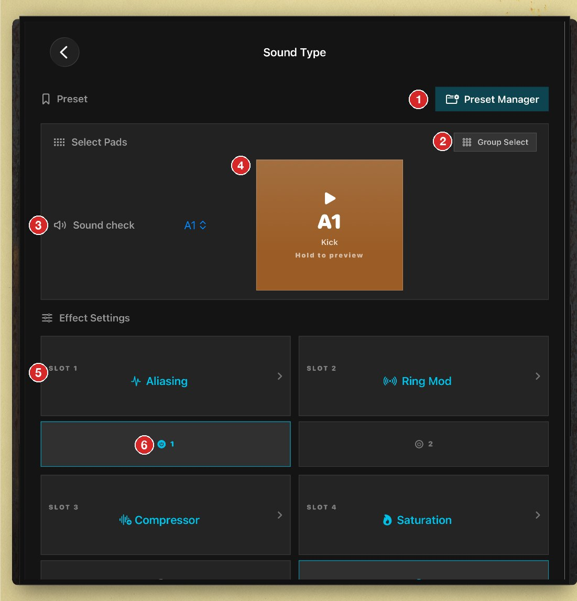
Preset Manager — Save the current settings as a preset, or load / delete saved presets.
Group Select — Choose which pads the settings apply to. Without a group selection, settings apply to all pads.
Sound check — Choose the pad used for previewing.
Preview — Hold to hear the pad.
Effect slots — Tap a slot to open its settings: SLOT 1 Aliasing, 2 Ring Mod, 3 Compressor, 4 Saturation, 5 Punch.
Slot on / off — Enable or bypass each slot.
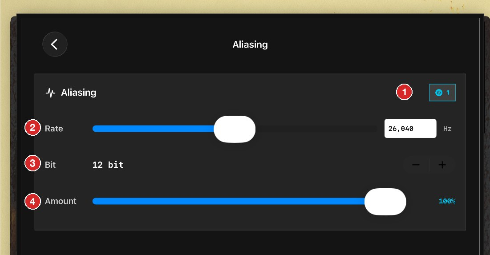
Slot switch — Turns Aliasing on / off.
Rate — Sample rate, 8,000–44,100 Hz (26,040).
Bit — Bit depth, 4–32 bit (12).
Amount — Effect depth, 0–100%.
Slot
Parameters (default)
Ring Mod
Freq 1–2000 Hz (120), Mix (35%)
Compressor
Threshold −48…0 dB (−18), Ratio 1–20:1 (4), Gain 0–18 dB (+6), Mix (100%)
Saturation
Drive 0–6 dB (2.0), Soft Clip (35%), Tape Sat (18%)
Punch
80 Hz 0–9 dB (+3), 1 kHz −4…−2 dB (−3), 8 kHz 0–9 dB (+3)
Mix Screen (Mixer)
Adjusts the volume balance of the pads. Open it with the Mix button on the TOP screen; it opens full screen.
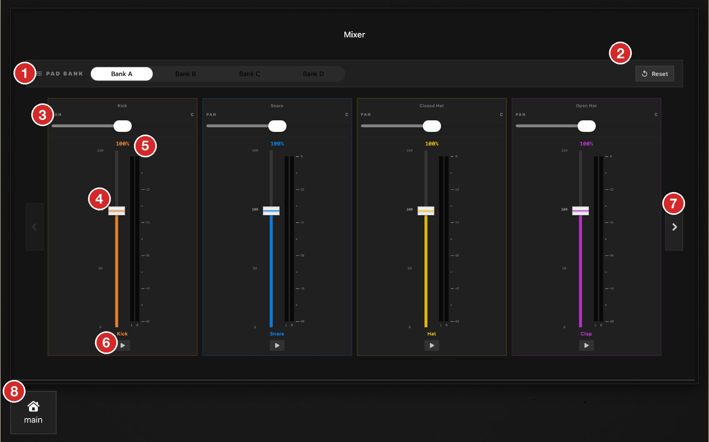
PAD BANK — Switch the bank (A–D) to adjust.
Reset — Returns the faders and pans of the current bank to 100% / centre.
PAN — Sets the left / right position (L100 – C – R100). Long-press to type a value.
Volume fader — Sets each pad’s volume from 0% to 150% (the value turns orange above 100%). Long-press to type a value.
Level meter — Shows the output level of the pad (−60 to 0 dBFS, with peak hold).
Play — Hold to audition the pad.
‹ / › — Show the previous / next 4 channels (you can also swipe).
main — Return to the TOP screen.
Saving & Loading
SAVE (Project Save)
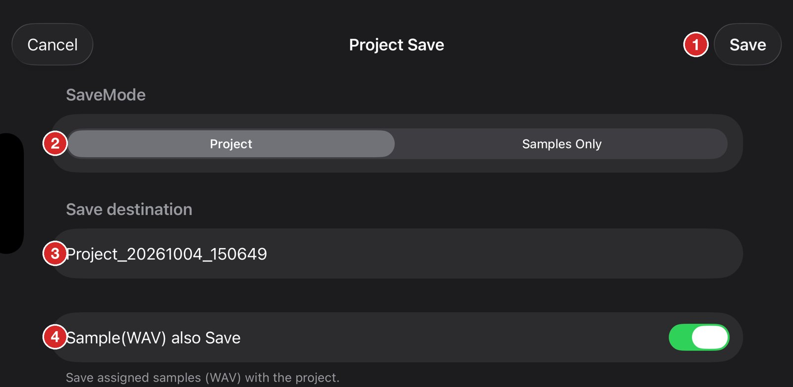
Save — Saves with the current settings (Cancel closes the sheet).
SaveMode — Project saves the whole project; Samples Only saves selected sounds as WAV files into a folder in Sound.
Save destination — Project name (default Project_yyyyMMdd_HHmmss). When a project is open you can choose Overwrite or New File.
Sample(WAV) also Save — Also saves the assigned samples as WAV. Turn off to save only patterns and settings.
LOAD (Project / Sound Load)
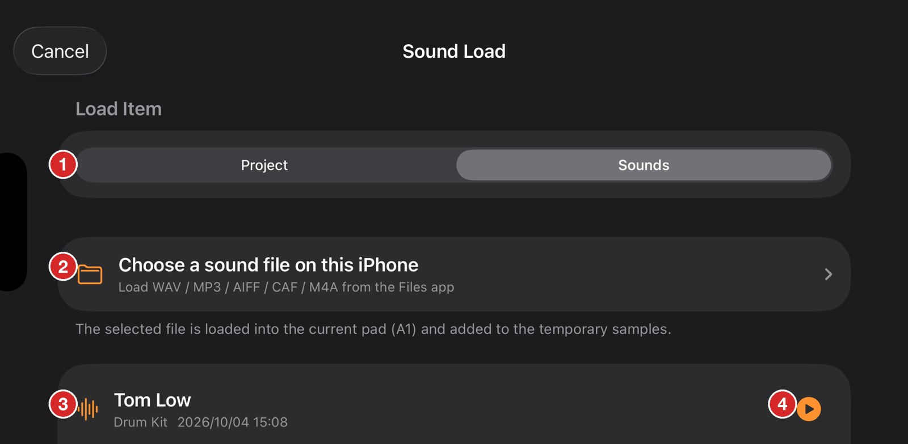
Load Item — Project lists saved projects (newest first; swipe left to delete). Sounds loads single sounds.
Choose a sound file on this iPhone — Loads a WAV / MP3 / AIFF / CAF / M4A file from the Files app into the current pad.
Sound list — Audio files in the app’s Sound folder; tap one to load it into the current pad and the temporary list.
Preview — Plays the file.
Export
Writes a pattern to a WAV file. Press the Export button on the TOP screen.
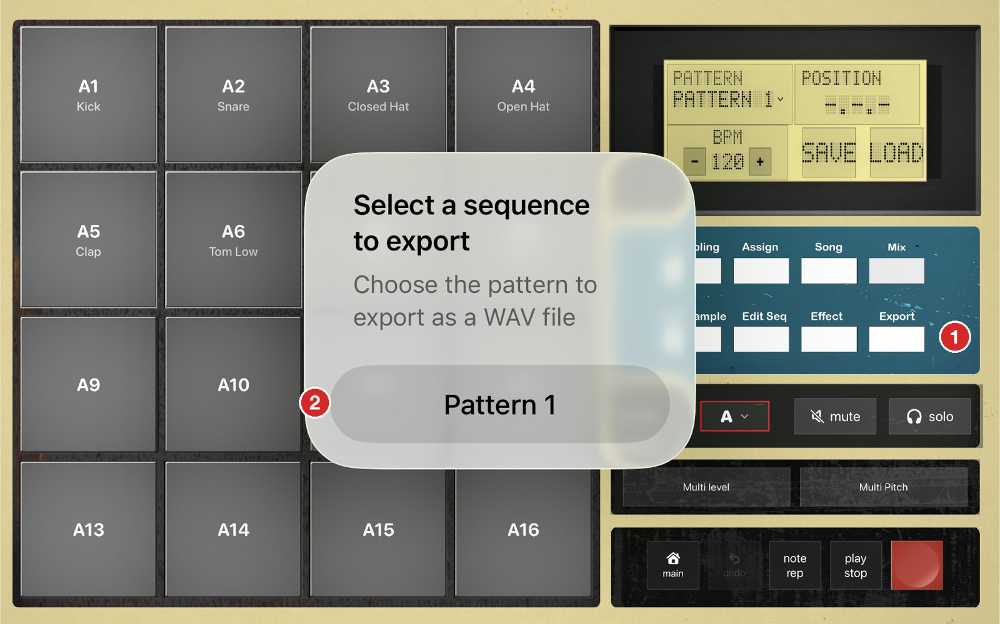
Export — Opens “Select a sequence to export”.
Pattern buttons — Choose the pattern to write out. The result (file path and length) is shown when finished.
Exports are 44.1 kHz / 16-bit mono WAV files and include all pad effects, mute groups, Mono cuts and pad links. Mute / solo states are not applied. The file length runs to the end of the last sound.
Where Files Are Saved
All data is stored in the app’s folder, visible in the Files app under On My iPhone › MS-12.
Folder
Contents
Project/<name>/
Projects: project.json and a Samples folder with the WAV files
Sound/
Imported sounds and “Samples Only” saves (sub-folders allowed)
Export/
Exported patterns (<PatternName>.wav; _1, _2 are added if the name exists)
A project stores the BPM, patterns, song order, pad assignments and every pad setting (volume, pan, tune, ADSR, voice mode, mute group, links and effects). Mute / solo states and unassigned temporary sounds are not saved.
Trial Version & Specifications
Trial version
In the trial version, locked features show a lock icon and open the purchase screen (UNLOCK / Restore Purchase). The full version is a one-time purchase, and everything made in the trial carries over.
Feature
Trial
Full version
Pad banks
Bank A only
Banks A–D (64 pads)
Patterns / bars
1 pattern, 1 bar
Unlimited patterns, 1–4 bars
Sampling length
Up to 10 s per sample (resampling also stops automatically at the limit)
No limit
Effects
NONE, TAPE ECHO, 4 BAND EQ
All effects
Song mode, Export, Save / Load, file import
Locked
Available
Specifications
Item
Details
Pads
4 banks × 16 pads = 64 pads (A1–D16)
Tempo
40–240 BPM (default 120)
Pattern length
1–4 bars (default 2); 96 ticks per beat
Grid / quantize
1/4, 1/8, 1/16, 1/32, 1/64, none
Count-in
4 beats before realtime recording
Note repeat
1/4, 1/8, 1/16, 1/32
Per-pad settings
Tune ±24 st, ADSR, Poly / Mono, Mute Group 1–8, Pad Link, Volume 0–150%, Pan L100–R100